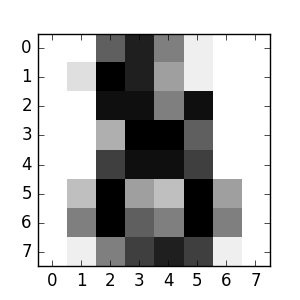

使用scikit-learn进行机器学习的简介¶
章节内容
在本节中，我们介绍在scikit-learn中一直用到的 机器学习 这个词汇，并给出一些简单的学习例子。
机器学习：问题设置¶
通常，一个学习问题考虑一组n个 样本 的数据，然后尝试预测未知数据的属性。如果每个样本都不仅仅是一个单独的数字，例如，一个多维实例（也称为 多变量 数据），则预测它有几个属性或特征。
我们可以把学习问题分为几个大类：
训练集和测试集
机器学习是学习一个数据集的一些特性，并将它们应用到新的数据。这就是为什么在机器学习中评估算法时一个普遍做法是把数据分成两组，一组称之为**训练集**，用于学习数据的属性；另一组称之为**测试集**，用于测试这些属性。
加载样例数据集¶
scikit-learn 有一些标准数据集，例如用于分类的 iris 和 digits 数据集，用于回归的 boston house prices dataset 数据集。
接下来，我们开始从shell中开启一个Python解释器，然后加载 iris 和 digits 数据集。我们的符号惯例是， $ 表示shell提示符， >>> 表示Python解释器提示符：
$ python
>>> from sklearn import datasets
>>> iris = datasets.load_iris()
>>> digits = datasets.load_digits()
一个数据集是一个字典状的对象，拥有所有的数据和一些与数据相关的元数据。这些数据存储在 .data 成员变量中，这是一个 n_samples, n_features 的数组。在监督学习问题中，一个或多个响应变量被存储在 .target 成员变量中。不同数据集的更多细节可以在 数据集章节 找到。
例如，在digits数据集，digits.data 可以访问得到用于对数字样本分类的特征：
>>> print(digits.data)
[[ 0. 0. 5. ..., 0. 0. 0.]
[ 0. 0. 0. ..., 10. 0. 0.]
[ 0. 0. 0. ..., 16. 9. 0.]
...,
[ 0. 0. 1. ..., 6. 0. 0.]
[ 0. 0. 2. ..., 12. 0. 0.]
[ 0. 0. 10. ..., 12. 1. 0.]]
而 digits.target 则是digits数据集的真实值，即我们尝试学习的每个数字图像对应的数字：
>>> digits.target
array([0, 1, 2, ..., 8, 9, 8])
数据数组的形状
数据始终是一个二维数组，形状是 (n_samples, n_features) ，尽管原始数据可能有不同的形状。对digits数据集，每个原始样本都是一张形状为 (8, 8) 的图像，可通过以下访问：
>>> digits.images[0]
array([[ 0., 0., 5., 13., 9., 1., 0., 0.],
[ 0., 0., 13., 15., 10., 15., 5., 0.],
[ 0., 3., 15., 2., 0., 11., 8., 0.],
[ 0., 4., 12., 0., 0., 8., 8., 0.],
[ 0., 5., 8., 0., 0., 9., 8., 0.],
[ 0., 4., 11., 0., 1., 12., 7., 0.],
[ 0., 2., 14., 5., 10., 12., 0., 0.],
[ 0., 0., 6., 13., 10., 0., 0., 0.]])
这个数据集的简单例子 说明了如何从原问题开始构造在scikit-learn中使用的数据。
学习和预测¶
对digits数据集，任务是预测一张给定的图像所代表的数字。给定10个可能的类（数字0到9）每个类的一些样本，我们*拟合*一个 估计量 来*预测*未知样本所属的分类。
在scikit-learn中，分类的估计量是一个实现 fit(X, y) 方法和 predict(T) 方法的Python对象。
一个估计量的例子是实现了 支持向量分类 的 sklearn.svm.SVC 类。一个估计量的构造函数以模型的参数作为参数，但由于时间问题，我们把估计量作为一个黑盒来考虑：
>>> from sklearn import svm
>>> clf = svm.SVC(gamma=0.001, C=100.)
我们把我们的估计量实例称为 clf ，因为它是一个分类器。它现在必须要拟合模型，也就是说，它必须从模型中*学习*。这是通过把我们的训练集传递给 fit 方法来完成的。作为一个训练集，我们使用其中除了最后一组的所有图像。我们可以通过Python语法 [:-1] 来选择这个训练集，这个操作产生一个包含 digits.data 中除了最后一组数据的所有实例：
>>> clf.fit(digits.data[:-1], digits.target[:-1])
SVC(C=100.0, cache_size=200, class_weight=None, coef0=0.0,
decision_function_shape=None, degree=3, gamma=0.001, kernel='rbf',
max_iter=-1, probability=False, random_state=None, shrinking=True,
tol=0.001, verbose=False)
现在，你可以预测新的值了，特别地，我们可以询问分类器 digits 数据集的最后一张图像的数字是什么，而我们没有使用这张图像来训练分类器：
>>> clf.predict(digits.data[-1:])
array([8])
相应的图像如下：
正如你所看到的，这是一个具有挑战性的任务：图像分辨率很低。你同意分类器的结果吗？
这个分类问题的一个完整例子是可以运行和学习的：Recognizing hand-written digits。
模型持久化¶
可以用Python内置的持久模型 pickle 来保存scikit中的模型：
>>> from sklearn import svm
>>> from sklearn import datasets
>>> clf = svm.SVC()
>>> iris = datasets.load_iris()
>>> X, y = iris.data, iris.target
>>> clf.fit(X, y)
SVC(C=1.0, cache_size=200, class_weight=None, coef0=0.0,
decision_function_shape=None, degree=3, gamma='auto', kernel='rbf',
max_iter=-1, probability=False, random_state=None, shrinking=True,
tol=0.001, verbose=False)
>>> import pickle
>>> s = pickle.dumps(clf)
>>> clf2 = pickle.loads(s)
>>> clf2.predict(X[0:1])
array([0])
>>> y[0]
0
对scikit的具体情况，可能采用joblib来代替pickle会更有趣（ joblib.dump & joblib.load ），因为它对大数据更有效，但只能pickle到磁盘而不是一个字符串：
>>> from sklearn.externals import joblib
>>> joblib.dump(clf, 'filename.pkl')
之后你可以加载之前已经pickle的模型（可能在另一个Python程序中）：
>>> clf = joblib.load('filename.pkl')
注解
joblib.dump返回一个文件名列表。每一个被包含在 clf 对象中的numpy数组都被序列化为文件系统上的一个单独文件。用joblib.load重新加载模型时，所有文件都需要在同一个文件夹中。
需要注意的是，pickle有一些安全性和可维护性的问题。请参阅 Model persistence 以获取有关scikit-learn模型持久化更详细的信息。
惯例约定¶
scikit-learn估计量遵循一定的规则，使它们的行为更具有预测性。
类型转换¶
除非另有说明，输入将被转换为 float64 ：
>>> import numpy as np
>>> from sklearn import random_projection
>>> rng = np.random.RandomState(0)
>>> X = rng.rand(10, 2000)
>>> X = np.array(X, dtype='float32')
>>> X.dtype
dtype('float32')
>>> transformer = random_projection.GaussianRandomProjection()
>>> X_new = transformer.fit_transform(X)
>>> X_new.dtype
dtype('float64')
在这个例子中， X 为 float32 ，这是用 fit_transform(X) 转换为 float64 的。
回归目标值被转换为 float64 ，分类目标值则维持不变：
>>> from sklearn import datasets
>>> from sklearn.svm import SVC
>>> iris = datasets.load_iris()
>>> clf = SVC()
>>> clf.fit(iris.data, iris.target)
SVC(C=1.0, cache_size=200, class_weight=None, coef0=0.0,
decision_function_shape=None, degree=3, gamma='auto', kernel='rbf',
max_iter=-1, probability=False, random_state=None, shrinking=True,
tol=0.001, verbose=False)
>>> list(clf.predict(iris.data[:3]))
[0, 0, 0]
>>> clf.fit(iris.data, iris.target_names[iris.target])
SVC(C=1.0, cache_size=200, class_weight=None, coef0=0.0,
decision_function_shape=None, degree=3, gamma='auto', kernel='rbf',
max_iter=-1, probability=False, random_state=None, shrinking=True,
tol=0.001, verbose=False)
>>> list(clf.predict(iris.data[:3]))
['setosa', 'setosa', 'setosa']
在这里，第一个 predict() 返回一个整数数组，因为 iris.target （一个整数数组）被用于 fit 中。第二个 predict() 返回一个字符串数组，因为用 iris.target_names 来拟合。
重新拟合和更新参数¶
一个估计量的超参数可以在通过 sklearn.pipeline.Pipeline.set_params 方法被构造之后再进行更新。不止一次调用 fit() 将覆盖以前 fit() 学习的内容：
>>> import numpy as np
>>> from sklearn.svm import SVC
>>> rng = np.random.RandomState(0)
>>> X = rng.rand(100, 10)
>>> y = rng.binomial(1, 0.5, 100)
>>> X_test = rng.rand(5, 10)
>>> clf = SVC()
>>> clf.set_params(kernel='linear').fit(X, y)
SVC(C=1.0, cache_size=200, class_weight=None, coef0=0.0,
decision_function_shape=None, degree=3, gamma='auto', kernel='linear',
max_iter=-1, probability=False, random_state=None, shrinking=True,
tol=0.001, verbose=False)
>>> clf.predict(X_test)
array([1, 0, 1, 1, 0])
>>> clf.set_params(kernel='rbf').fit(X, y)
SVC(C=1.0, cache_size=200, class_weight=None, coef0=0.0,
decision_function_shape=None, degree=3, gamma='auto', kernel='rbf',
max_iter=-1, probability=False, random_state=None, shrinking=True,
tol=0.001, verbose=False)
>>> clf.predict(X_test)
array([0, 0, 0, 1, 0])
在这里，默认内核 rbf 在估计量通过 SVC() 构造构造后变成 linear ，重新拟合估计量后又变回 rbf ，并进行第二次预测。